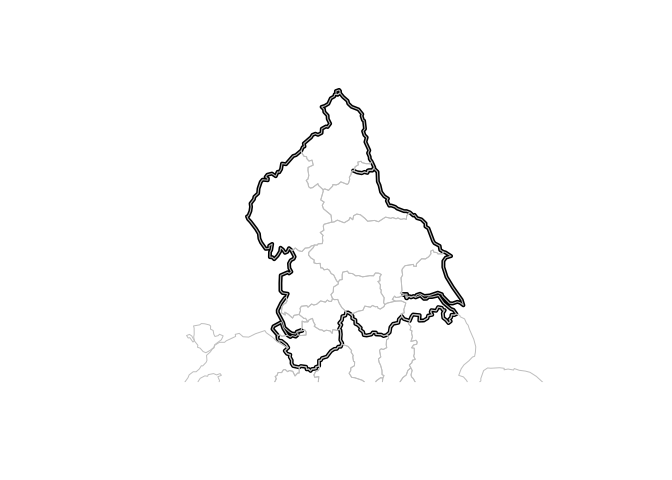
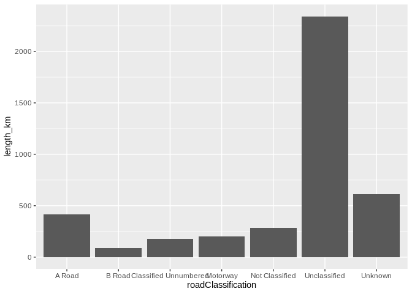
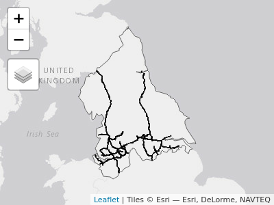
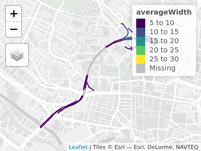

The goal of capcarb is to provide a home for reproducible analysis and open data for the analysis of embodied carbon, known as capital carbon or CapCarb, associated with transport systems.
Installation
Install from GitHub with:
# install.packages("devtools") devtools::install_github("creds2/capcarb")
Generating input data
There was no readily available boundary data for the TfN region, so it was constructed as follows, using open data from the Propensity to Cycle Tool (PCT):
regions = pct::pct_regions # mapview::mapview(regions) tfn_zone_text = "manc|yorks|lanc|chesh|liv|north-e|north-y|cumbria|humb" regions_tfn = regions[grepl(pattern = tfn_zone_text, ignore.case = TRUE, x = regions$region_name), ] # mapview::mapview(regions_tfn) tfn_region = sf::st_union(regions_tfn) plot(tfn_region, lwd = 4) plot(regions, add = TRUE, border = "grey", col = "NA")

tfn_region_27700 = sf::st_transform(tfn_region, 27700)

Motorway data was accessed as follows (after pre-cleaning Ordnance Survey data):
[1] "gml_id" "identifier"
[3] "beginLifespanVersion" "localId"
[5] "namespace" "fictitious"
[7] "validFrom" "reasonForChange"
[9] "roadClassification" "routeHierarchy"
[11] "formOfWay" "trunkRoad"
[13] "primaryRoute" "roadClassificationNumber"
[15] "operationalState" "provenance"
[17] "length" "length_uom"
[19] "matchStatus" "startGradeSeparation"
[21] "endGradeSeparation" "averageWidth"
[23] "averageWidth_uom" "minimumWidth"
[25] "minimumWidth_uom" "confidenceLevel"
[27] "inDirection" "inDirection_uom"
[29] "inOppositeDirection" "inOppositeDirection_uom"
[31] "cycleFacility" "wholeLink"
[33] "roadStructure" "alternateIdentifier|ThematicIdentifier|identifier"
[35] "identifierScheme" "roadName"
[37] "alternateName" "geometry" table(roads_uk$roadClassification)
A Road B Road Classified Unnumbered Motorway
440770 215962 361711 16710
Not Classified Unclassified Unknown
363169 2150266 1563113 motorways_uk = roads_uk[roads_uk$roadClassification == "Motorway", ] motorways_tfn = motorways_uk[tfn_region_27700, ] saveRDS(motorways_tfn, "motorways_tfn.Rds")
Roads in Leeds
roads_leeds = readRDS("roads_leeds.RDS") aggregate(roads_leeds$length, by = list(roads_leeds$roadClassification), sum) #> Group.1 x #> 1 A Road 413116.75 #> 2 B Road 85369.64 #> 3 Classified Unnumbered 178685.63 #> 4 Motorway 202262.91 #> 5 Not Classified 283781.92 #> 6 Unclassified 2339655.83 #> 7 Unknown 613394.89 roads_leeds %>% sf::st_drop_geometry() %>% group_by(roadClassification) %>% summarise(length_km = sum(length) / 1000) %>% ggplot() + geom_bar(aes(roadClassification, length_km), stat = "identity") #> `summarise()` ungrouping output (override with `.groups` argument)


Motorways in the TfN region
motorways_tfn = readRDS("motorways_tfn.Rds") tm_shape(tfn_region_27700) + tm_borders() + tm_shape(motorways_tfn) + tm_lines() #> Linking to GEOS 3.8.0, GDAL 3.0.4, PROJ 7.0.0

The data is quite detailed, as shown below:
a58m = motorways_tfn %>% dplyr::filter(roadClassificationNumber == "A58(M)") tm_shape(a58m) + tm_lines("averageWidth", palette = "viridis", lwd = 2)
